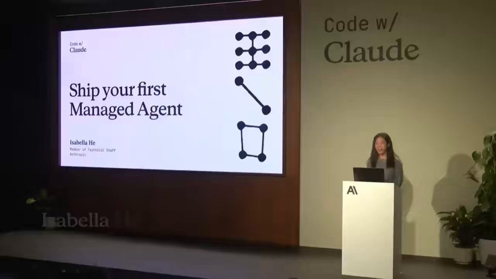
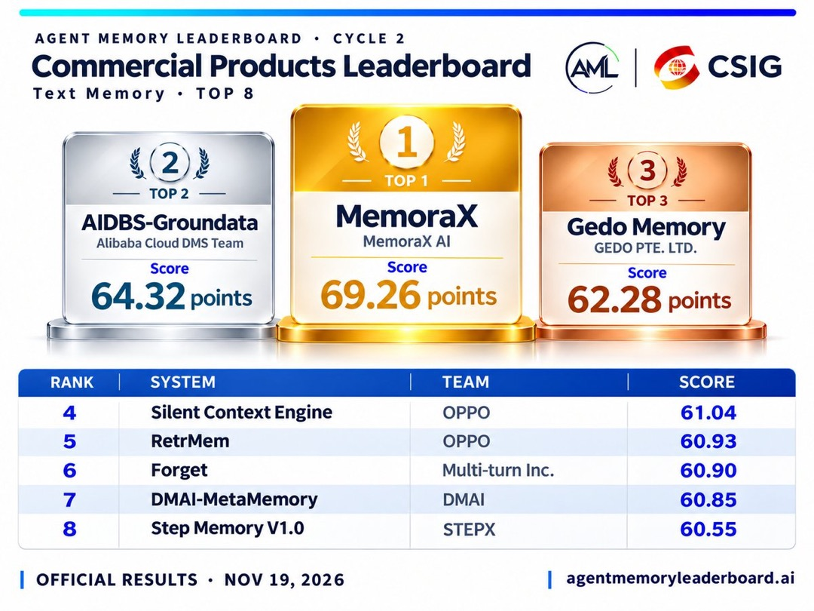

本期速览
01 Agent验证五法：标准、环境与证据
03 编程Skill实测裸模型三类进顶级
06 MemoraX居AML记忆评测三榜首位
07 AGENTS.md八条规则让AI少写代码
01｜Agent验证五法：标准、环境与证据
来源（X） · @dotey · 2026-11-23 04:37
很多朋友都被 Agent 坑过：它信誓旦旦说做好了、验证完了，你信以为真，上线后发现压根没做好。被老板骂完回头找它，它认错态度很好，下次还是一样。
问题出在我们让它验证的方式上：Agent 不知道什么叫“做好了”，你也没有低成本的办法确认它真的做好了。分享五条我在用 Agent 做验证时的经验。
一、不要依赖对抗式验证
对抗式验证就是让另一个甚至多个 Agent 来检查结果，执行的 Agent 根据反馈改进，再检查、再改进，直到完成为止。
听起来很好，实际上经常无法收敛。尤其是不太聪明的模型，大部分时候是越改越糟，还浪费了很多 Token。
原因是缺少统一的验收标准。负责检查的 Agent 并不一定知道完整的上下文，也不知道准确的验收标准，于是自作主张提一堆意见，执行的 Agent 再照单全收，结果就越改越偏。
二、给出清晰的验收标准，再给一个能验收的环境
举个例子，你把设计稿交给 Agent，说：“帮我把这几个设计稿做成页面”，通常它会给你一个差不多的结果，有时候出入还很大。
换一个说法：“帮我把这几个设计稿做成页面，完成后请对网页截图，对比设计稿，要求像素一个都不要差”。这时候 Agent 做完不会轻易交差，它会截图，写工具对比截图和设计稿的像素差异，返工重做，直到像素真的一个都不差。
大部分时候我们并不需要一个像素都不差，有些偏差可以接受。重点是让它知道验收标准是什么，并且手里有办法自己去验。
三、越早验证，返工成本越低
尽早验证在传统软件工程里是常识，是大量血泪教训换来的。只是现在 Vibe Coding 让生成代码的成本大幅降低，非专业人士越来越多，大家渐渐忘了写代码之前还有三道关：
可行性分析：这个项目真的值得做吗？做出来会有人用吗？投入产出比合算吗？
原型开发：先做基本的交互，用模拟数据低成本做出一个可运行的原型，快速验证方向对不对，不对马上调整。现在 Agent 做原型已经很强了，比如 Claude Design（或者本地版的 https://github.com/jimliu/open-artifact），做出来的东西和最终结果看起来没什么差别，成本低得多，速度也快。
系统设计：技术选型、模块划分、数据结构、数据库设计、API Schema 这些。设计没做好，系统也能跑，但将来维护成本要高不少。Agent 能力虽然强，选的技术方案并不总是最好的。动手实现之前，先让它写一份技术方案文档，你大概看看：一方面帮你理解项目是怎么实现的，另一方面能及时纠正潜在问题，避免做完再返工。
四、让 Agent 提供证据，降低你的验收成本
人在 Loop 里是必不可少的，完全交给 AI，大概率只能收获 AI Slop。但人的验收能力是瓶颈，要确认的东西太多会很累。我最近用 Antigravity，跨 Workspace 每读一个文件都要我手工确认一遍，简直快崩溃了。
所以要把人确认的成本降到最低：能快速判断结果对不对，快速指出哪里有问题。
最简单的方式，是让 Agent 提供截图、录屏、可视化的 HTML 报告。Agent 在截图过程中自己也能发现一些问题，但截图最大的价值，是让人一眼就能看出问题。
想象一下，你是老板，员工来汇报工作，一页密密麻麻的 Word 文档和三页漂亮的 PPT，哪个更容易看？
我现在最常用的几个做法：
- 开发新功能，让它提供新功能的截图
- 修 bug，让它提供修改前和修改后的截图对比
- 让它自己模拟 API 响应数据，动态生成各种不同场景的截图，完全不需要服务端配合（虽然我还没搞明白它是怎么模拟的）
五、代码审查聚焦于真正的问题
Agent 生成代码的速度太快，瓶颈已经转移到了代码审查和验证上。代码审查不太可能完全靠人来做了，但人参与仍然有意义，只是方式要调整：
- PR 尽可能小。这样 Agent 审起来准确率更高，人也看得过来。
- 让 Agent 审，但不全信它的结论。审查结果要分级，人只盯 P0、P1 级别的问题，尤其是安全和性能问题，人工甄别一下，必要时让 Agent 解读、在本地验证。
- 细枝末节放过去。代码规范、最佳实践这类问题，不用太在意。
最后
这五条说的是同一件事：Agent 说的“做好了”不能直接当结论用，得让它变成你能检查的东西。
- 动手之前，告诉它什么叫做好了
- 动手之前，先用原型和方案文档把方向验一遍
- 做完之后，让它拿截图和对比来证明
- 你自己的精力，只花在最要紧的问题上

02｜Jev Harness提速最多300倍
来源（X） · @savvy_luvvvv · 2026-11-22 23:11
jev 创始人、instructgpt 合著者 diogo almeida 放出了一份 pdf，讲清楚怎么搭一套 jev harness
它的承诺：
> 速度最多快 300 倍
> 成本最多低 600 倍
快和省，全都来自模型外面那层 harness
用法：
> 把这份 pdf 和下面的文章一起丢给 claude code 或 codex
> 让它照着重建一遍自己的配置
花 2 个小时，你的 agent 就能跑在一套很少有团队拥有的 harness 上 ↓

引用内容
Iron Giant @irongiantXBT
中文译文
原文
03｜编程Skill实测裸模型三类进顶级
来源（X） · @Tynric_carter · 2026-11-23 16:28
46 个候选，八个类目全部同题实测。这一篇多了个狠角色：不装任何 skill 的裸模型，每一类都进来同题跑，成绩直接排进榜里。
结果它三类进了顶级，写文档那一类直接登顶。很多 skill，打不过不装 skill。不服评论区见。 https://x.com/i/article/2124778551631298560
04｜Anthropic免费Agent课程上线
来源（X） · @huxlab · 2026-11-23 17:46
直接由 Claude 的首席工程师亲自下场。
完全免费。
干货密度比市面上 1500 刀的收费课还要高。
建议收藏此帖，完整看一遍，你会回来感谢我的。🔖

05｜Pi扩展合集覆盖压缩缓存与遥控
来源（X） · @GitTrend0x · 2026-11-23 15:00
sting8k 的 0 Token 压缩器、IgorWarzocha 的 Howaboua 扩展全家桶、llblab 的 Telegram 遥控台、jiangge 的缓存命中优化器、Andy8647 的工具折叠神器……全网玩家把 Pi 玩成了下一代「秒级压缩机 + 百宝箱 + 掌上遥控器 + 省钱加速器 + 清爽终端」:
1️⃣ sting8k/pi-vcc（https://github.com/sting8k/pi-vcc）
不调用大模型的对话压缩器：直接按算法提取整理，同样的输入永远同样的输出，不会编造；在 1,884 个真实会话上中位数压缩 97.6%、耗时 1 毫秒，压缩后旧历史还能用 vcc_recall 搜回来；自动接管 /compact，也能 /pi-vcc 随时手动压。
“压缩不烧 Token，记忆还能翻旧账”！
2️⃣ IgorWarzocha/howaboua-pi-stuff（https://github.com/IgorWarzocha/howaboua-pi-stuff）
一个老玩家日常在用的 Pi 扩展和技能合集：一键装 9 个扩展 + 15 个技能，也能单装；里面有会话笔记和多 Agent 看板、登录态浏览器控制、本地 VM 沙箱、Grok 实时语音、切模型时预测缓存命中、GitHub 评论提醒，还有会动的小宠物。
“长会话不崩，全靠这一箱工具”！
3️⃣ llblab/pi-telegram（https://github.com/llblab/pi-telegram）
把 Telegram 私聊变成 Pi 的手机操作台：发提示词、排队任务、实时看进度预览、收最终回复和文件；电脑上开的 Pi 会话，出门后在 Telegram 接着聊，思考和工具细节要不要显示自己定；Pi 里 /telegram-setup 粘贴 Bot Token 就能连。
“人离开键盘，活不离开手”！
4️⃣ jiangge/pi-cache-optimizer（https://github.com/jiangge/pi-cache-optimizer）
专治 Pi 的提示词缓存命中率：把稳定内容放前面、压缩技能列表、给 OpenAI 兼容代理补上缓存 key，代理缺缓存配置会提醒你；状态栏直接显示当前模型的缓存统计，父子 Agent 和并行进程互不干扰，/cache-optimizer fix 还能自动修复。
“缓存命中一上去，速度和钱包一起回血”！
5️⃣ Andy8647/pi-tidy（https://github.com/Andy8647/pi-tidy）
Pi 的工具调用折叠器：一轮回复里的一堆工具调用收成一行，点开再看，改动、报错和后台任务照样显眼；左右分栏带行号的 diff、Bash 语法高亮、Nerd Font 图标，消息里写的颜色值前面还会画上对应色块。
“几十个工具调用，一行收好，满屏清爽”！
06｜MemoraX居AML记忆评测三榜首位
来源（X） · @Xudong07452910 · 2026-11-23 19:21
刚看到 @AgentMemoryL 发布的 AML Cycle 2 榜单，收到了 402 次完整评测任务提交，阿里云、OPPO、Shopee 等团队都参与了。MemoraX 更是直接拿下文本、代码、多模态三个商业产品榜的第一。
我比较感兴趣的是，这次 AML 把 Agent Memory 的评测做得更细了，尤其是 Coding Memory。
现在 Coding Agent 已经能连续执行很长时间的任务，但之前修过的 Bug、理解过的代码结构、积累的工程经验，究竟有多少能在下一次任务中真正派上用场？
AML 在 Coding Memory 中引入了真实的软件工程任务，还会区分相关记忆和噪声记忆，最终看 Agent 能否成功修复 Bug、实现新功能。
这次 MemoraX 在 Coding Memory 商业产品组拿到 68% 的任务解决率，atlas-harness 以 63% 排名第二。开源组则由 InsightMem 以 63.33% 领先。
感觉 Agent Memory 的竞争正在变得越来越具体了。未来 Agent 能否长期可靠地工作，记忆的质量和使用方式可能会成为一个很重要的变量。
挺期待 AML 后续能加入更多真实的长时任务，看看这些记忆系统在实际工程中究竟能带来多大收益。
完整榜单：http://agentmemoryleaderboard.ai
引用内容
Agent Memory Leaderboard @AgentMemoryL
中文译文
🏆 AML Cycle 2 结果已发布！💥
• 100万+ 跨平台展示量
• 1000万+ 累计网站点击量
• 402 个任务提交
• 三个赛道：文本、代码和多模态记忆
本次周期汇聚了来自全球 AI 社区的团队，包括来自阿里云 DMS、Shopee、OPPO、KT 和 OceanBase 的团队——以及高校研究人员、记忆类创业公司和独立开发者。
探索完整结果：https://agentmemoryleaderboard.ai
亮点和评估详情见下方🧵
原文
🏆 AML Cycle 2 results are live! 💥
• 1M+ cross-platform impressions
• 10M+ cumulative website clicks
• 402 task submissions
• Three tracks: text, code and multimodal memory
This cycle brought together teams from across the global AI community, including teams from Alibaba Cloud DMS, Shopee, OPPO, KT and OceanBase—alongside university researchers, memory startups and independent developers.
Explore the full results: https://agentmemoryleaderboard.ai
Highlights and evaluation details below 🧵



07｜AGENTS.md八条规则让AI少写代码
来源（X） · @MuRong97358 · 2026-11-22 23:51
60B tokens 什么概念？换算成钱，差不多六位数美元。
这 8 条规则说白了就一句话：别让你的 AI 编程助手像个刚入行的实习生，什么都想自己造一遍；要让它像干了十年的老油条一样，写最少的、最能用的代码。
直接上规则：
1. 不保留向后兼容。过时的东西直接删，别加兼容层、别写迁移脚本、别留备用回退方案。
2. 选能满足当前需求的最简单实现。别搞预防性抽象，也别加那些“万一以后用得上”的配置层。
3. 系统要分层生长。先跑通一个最小的端到端版本，能跑了再往上加东西。绝对不要因为未来可能出现的复杂度，就去拆掉一个当前能正常工作的东西。
4. 组件保持模块化，关注点要分离清楚。
5. 优先用成熟的、有人维护的第三方库。没有特别硬的理由，别自己重写。
6. 动手之前，先翻翻项目里已经有的依赖能做什么，再决定要不要加新包或自己写。别想当然地觉得库里肯定没有。
7. 架构决策要往长远做。不接受“先凑合用，以后再说”这种临时方案。
8. 先看成熟产品是怎么解决同一个问题的，用已经被验证过的模式，别从零开始发明。
就这 8 条，丢进你项目根目录的 AGENTS.md 文件里，Cursor、Claude Code、Codex、Windsurf 这些工具都会自动读取。
为什么它能省 token？因为 AI 写代码最大的浪费，其实不是写错，而是反复写多余的东西。
它给你引三个依赖、搭五个抽象层，解决一个标准库十行就能搞定的事；你让它改，它又给你补两百行。这 8 条规则就是在它动笔之前把它摁住：能不写的不写，能复用的复用，能简单的别搞复杂。
代码短了，返工少了，token 自然就省了。
之前我推荐过的 Ponytail 那个插件，干的是同一件事，只不过它是在运行时强制检查；而这个是在 AGENTS.md 里从源头约束。两个一起用，效果拔群。
但作者自己加了个非常实在的警告：
这套规则只适合 side projects，生产环境慎用。
他亲口说过，“不保留向后兼容”那条，曾经让 Agent 差点删了生产数据库的表，差点损失 2000 美元的数据。生产环境你得自己改，至少把第一条删掉，或者改得温和一点。
所以，如果你在做 side project、内部工具、原型，把这 8 条抄进 AGENTS.md，你会发现 AI 写出来的代码突然像个人写的了。
如果你要用在生产环境，自己把握好第一条和第七条之间的度，别让 AI 把你的库表删了。
省 token 的方法有很多——换便宜模型是一种，写好 prompt 是一种，但最有效的，是在项目根目录放一个文件，告诉 AI：
别整花活，写最少的、能跑的代码。
08｜FDE交付课三步从算硬账到盯采用
来源（X） · @lxfater · 2026-11-24 01:30
但翻完课表才发现，前 9 门跟普通开发者课一样，值钱的反而是最后 2 门
这岗位英文叫 FDE，就是扎进客户现场、帮企业把 AI 用起来的人
前 9 门教用 Claude Code 写代码和接工具，属于基本功
多出来的 2 门才 100 分钟，却把写代码的和能落地交付的分开了
这 100 分钟到底教了什么？
交付课简介第一句就很直白，把技术跑通反而是容易的，决定成败的是技术外面的交付
翻完这两门大纲，就干三件事：
1. 先挑能算出硬账的活
别只做提速一点的小优化，官网举了个实在例子
原来 4 个人干 6 周，改成 2 个人 2 周干完，30 天拿出硬结果，老板才认账
2. 动手前先记好旧账
上线前原来花多久、错多少，必须先记下来当底数
没这笔旧账，跑完试点连省多少钱都说不清，客户凭啥继续掏钱？
3. 盯到人真用起来
很多 AI 项目黄了，是因为工具做好了、员工压根不用
课里教先圈小团队跑通，再带出内部骨干教别人，熬过刚上手变慢那段坎
看懂这三件事，往后该往哪使劲就清楚了！
AI 写代码越来越便宜，光按文档写功能越来越难卖上价
能把模糊需求算成清楚账目、带团队跑通落地，才算真本事，你说是不是？
但想学这套课的先别急，网上好多人说免费认证，点进去容易白跑一趟
完整驻场课和认证考试只对合作伙伴公司邮箱开放，个人报不了
不过里面有 8 门教模型、Claude Code 和接工具的课
在 Anthropic 公开学院能免费学，还给结课证书
完整 11 门课表和那 2 门交付大纲放下面，自己翻一眼就明白👇
https://anthropic-partners.skilljar.com/path/claude-fde